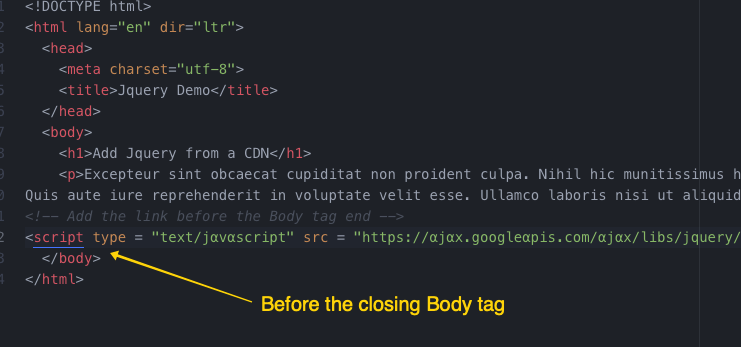

Javascript / Jquery
What is Javascript?
Javascript is a scripting language that allows you to add interactivity to web pages.
There are 3 main components to current web pages:
HTML
We use to create the structure of the page.
CSS
We use it to style the elements.

Javascript
We use it to add dynamic functionality interactivity.

Is Javascript a programming language?
- Javascript is the default scripting language in HTML and is used by all modern browsers.
- Scripting languages are what can be called a sub-category of programming languages.
- A Programming language is in simple terms a list of instructions to be performed by the browser or application.
- Programming Languages: C, C#, C++, Java
- Scripting Languages: Javascript, PHP, Phyton
- The difference between the two is the way they are processed.
A little bit of History..
- Javascript was created by Netscape in 1995, but it was originally named Mocha.
- It has nothiing to do with the Java Language, but it was marketed to be used with it. The only common traits are some syntax similarities.
- In its origin it was viewed as a lesser language.
- In the early 2000s many big companies like Facebook and Google started using Javascript on their websites and applications
- Javascript was not widely used until 2008, when it started it's journey to become one of the most popular programming languages.
- Used by at least 95% of websites.
Advantages of Javascript
- Easy to learn
- Allows you to implement interactivity quickly
- It's fast.
What can I do with Javascript?
- Add interactivity to websites: Interactive menus, form validation, slideshows, calculations, etc.
- Web Applications: Google maps, YouTube
- Presentations
- Games
- Art
- Some mobile and smartwatch apps
- Projects you can do with JS
- Javascript syntax
Using Javascript on your website.
External File

<script src="js/file.js"></script>
Jquery (Write less, do more.)

JQuery is a Javascript Library, not a language.
Libraries are collections of pre-written code you can plug to your webpage without writing full javacript functionality.
How do I add Jquery to my website?

CDN Based Version
Include a link to the file in their Content Delivery Network (CDN).
